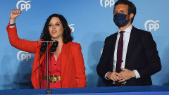

Ayuso arrasa en Madrid
XOSÉ HERMIDA/PAULA CHOUZA

Isabel Díaz Ayuso, una absoluta desconocida sin gran recorrido hace solo dos años, se consolida como un auténtico fenómeno político. La presidenta madrileña y candidata del PP es la gran vencedora de las elecciones en la Comunidad de Madrid, donde ha arrasado hasta el punto de lograr más escaños que los tres partidos de izquierda juntos, lo que le permitirá gobernar con comodidad y sin necesitar a Vox para cada ley.
Pablo Iglesias abandona la política tras el “fracaso” de la izquierda en Madrid
PAULA CHOUZA